Эволюция ЭВМ (1940-е - 1970-е гг.)
До появления персональных компьютеров ЭВМ (электронно-вычислительные машины) были огромными устройствами, занимавшими целые залы.
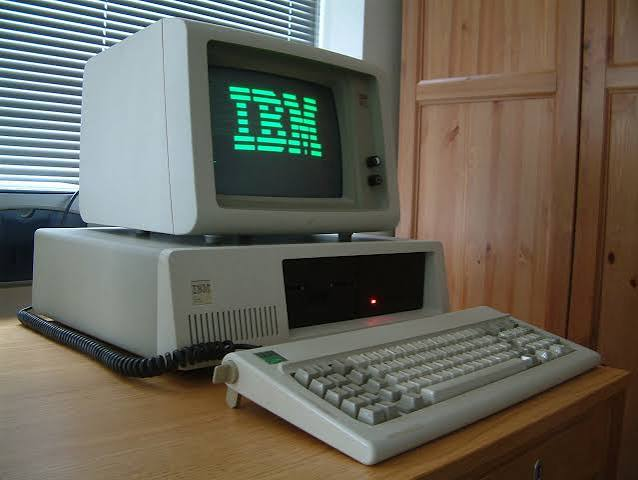
Первые ЭВМ (1945-1950-е)
Огромные ламповые машины такие как ENIAC ( одна из первых вычислительных машин), весили десятки тонн и требовали целые команды инженеров для обслуживания. Они занимали отдельные комнаты, тратили около 150-170Вт электроэнергии и сильно грелись. Задачи на них записывали на специальных бумажных карточках с отверствиями.
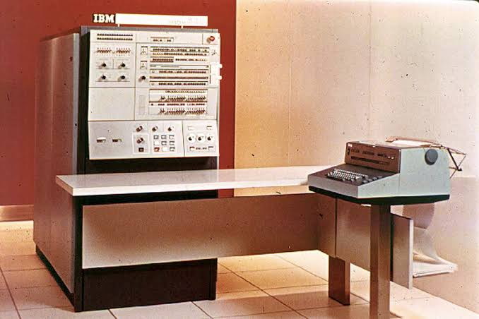
Транзисторы и центральные ЭВМ(1960-е)
На смену хрупким вакуумным лампам пришли транзисторы и интегральные схемы. Огромные залы больше не требовались - компьютеры уменьшились до размеров нескольких шкафов, стали меньше греться и начали массово использоваться в институтах и банках.Расход электроэнергии упал до 10-30 кВт, а данные начали записывать на магнитные ленты.
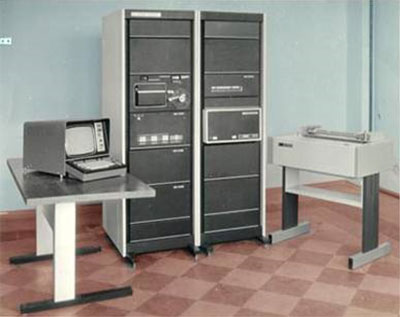
Малая ЭВМ и микропроцессоры (1970-е)
С появлением микропроцессоров и мини-ЭВМ компьютеры уменьшились до пары стоек. У них появились привычные дисплеи с клавиатурой, что подготовило почву для создания первых персональных компьютеров.Расход электроэнергии снизился до 1-3 кВт, а сами устройства стали настолько доступными что их начали ставить в небольших офисах и лабораториях.
Эволюция системных блоков
Первые персональные компьютеры занимали много места на столе, а их корпуса выполнялись исключительно из грубого светлого пластика. Со временем вертикальная форма корпусов позволила убрать их под стол и освободить рабочее пространство. Сегодня системный блок — это стильное и одновременно технологичное устройство.
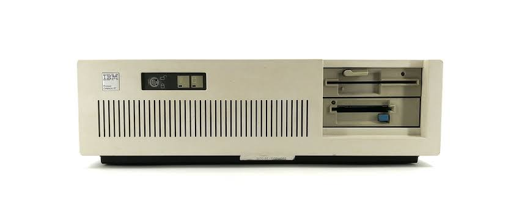
Первые десктопы (1980-е)
В 1980-е годы системные блоки (например: IBM PC 5150, 1981 года) имели горизонтальный формат (desktop) и ставились прямо на стол под монитор. На передней панели располагались дисководы для дискет 5,25 дюйма и механический замок с ключом - он блокировал клавиатуру и защищал корпус от вскрытия, заменяя современные пароли. Корпуса изготавливали из прочного металла, чтобы они легко выдерживали вес тяжелых мониторов той эпохи. Внутри устанавливались блоки питания стандарта AT (Advanced Technology - передовая технология) мощностью от 130 до 200 Вт, через которые часто подключался сам монитор, а на задней панели находились широкие разъемы для принтера и клавиатуры.
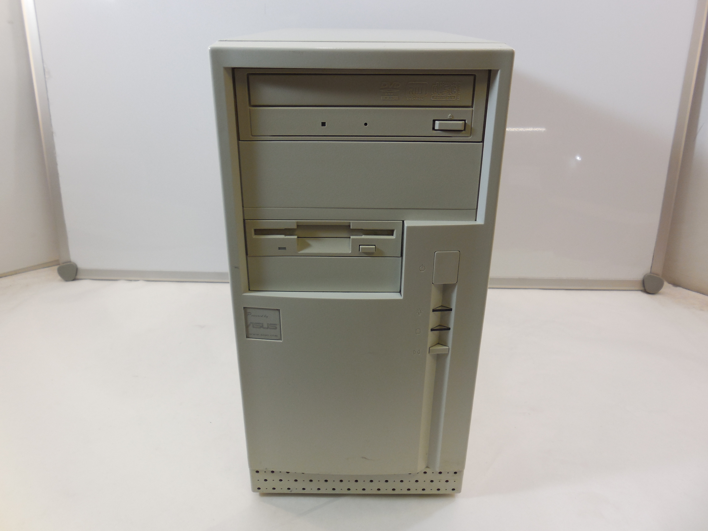
Эра системных блоков 1990-х годов
В 1990-е годы системные блоки обрели свой классический бежевый дизайн. В тот период 90-х годов общепринятым стандартом стали приводы CD-ROM (дисководы для лазерных дисков) Floppy-дисководы для дискет 3,5", которые использовались как основные устройства для переноса файлов, документов и програмного обеспечения.Корпуса получили вертикальное исполнение - такой формат назвали Tower (башня). Также появился единственный стандарт ATX (Advanced Tehnology Extented - расширенная передовая технология) с блоками питания на 200-300 Вт. На передей панели разместились кнопки питания и перезагрузки, а на самой материнской плате появилась единственная панель разъемов для подключения клавиатуры, мыши и принтера.
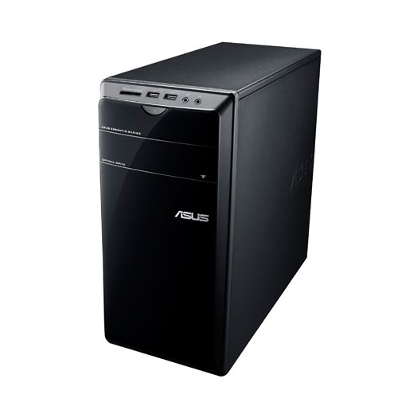
Офисная и домашняя классика (2000-2010-е)
На смену громоздким старым компьютерам пришли строгие и практичные системные блоки.Дизайн стал минималистичным, а главным приоритетом стала стандартизация компонентов, удобное расположение плат и базовое охлаждение вентиляторами. Бежевый пластик сменился черным или серебристым металлом, а мощность блоков питания выросла до 350 - 500 Вт. На переднюю панель вывели разъемы USB (Universal Serial Bus - универсальная последовательная шина - интерфейс для быстрого подключения устройств) и гнезда для наушников и микрофонов, а привычные дисководы заменили приводами DVD (Digital Versatile Disc - цифровой многоцелевой диск - носитель для хранения видео, игр и больших фильмов).
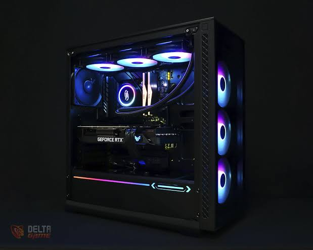
Современные стационарные ПК (Наши дни)
Стеклянные панели, RGB-подсветка, жидкостное охлаждение и кастомные кабели. Системный блок стал мощным инструментом и украшением стола.Для продува прозводительных деталей переднюю панель часто делают сетчатой, а мощность блоков питания достигает 600-1200 Вт. На лицевой стороне корпуса размещаются скоростные разъемы USB Type-C (универсальный двухстороний порт) для быстрой передачи данных. Дисководы окончательно исчезли, а для защиты комплектующих от пыли устанавливают съемные фильтры.
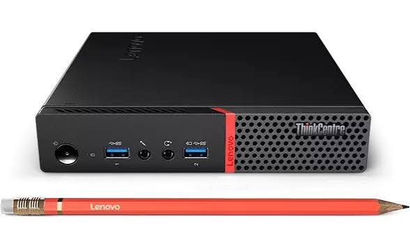
Эра неттопов (Наши дни)
Компьютеры стали сверхкомпактными. Современные неттопы объемом всего около 1 литра по размеру сопоставимы с обычным карандашом.Они работают бесшумно, занимают минимум места на столе или прячутся за монитором, но легко справляются с рабочими задачами.Для крепления на заднюю стенку монитора используется стандарт VESA (Video Electronics Standards Association - стандарт монтажных отверствий). Такие устройства оснащаются внешними блоками питания мощностью всего 45-90 Вт и распаянными на материнской плате компонентами.
Эволюция ноутбуков
Мобильность прошла огромный путь от чемоданов весом в 10 кг до легких девайсов, которые можно держать одной рукой.
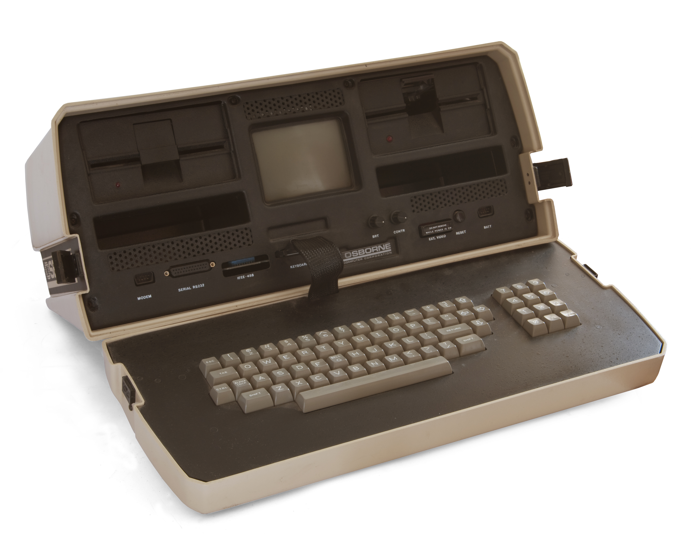
Эра первых портативных ПК (1981-1990)
Первые устройства, такие как Osborne 1 весили около 11 кг, имели крошечные монохромные экраны. Они относились к категории транспортируемых компьютеров и работали исключительно от электрической розетки. Для загрузки операционной системы и программ в корпус встраивали два дисковода для гибких дискет 5,25 дюйма (магнитных дисков в мягком пластиковом корпусе), а клавиатура служила защитной крышкой.
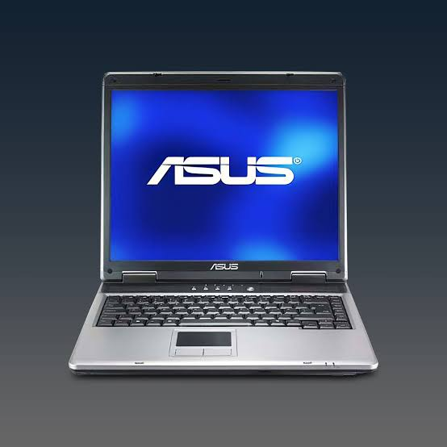
Эра ноутбуков 1990-х годов (модель ASUS L7300)
В 1990-е годы ноутбуки обрели классический форм-фактор "раскладушки". Стандартом эпохи стали цветные ЖК-экраны и CD-ROM-дисководы. В это же время компания ASUS задала тренд на максимальное уменьшение толщины и веса мобильных устройств. Появились встроенные аккумуляторы, позволяющие работать без розетки около 3 часов. Для управления курсором вместо внешней мыши начали использовать трекбол (вращающийся шарик) и первые сенсорные панели - тачпады.
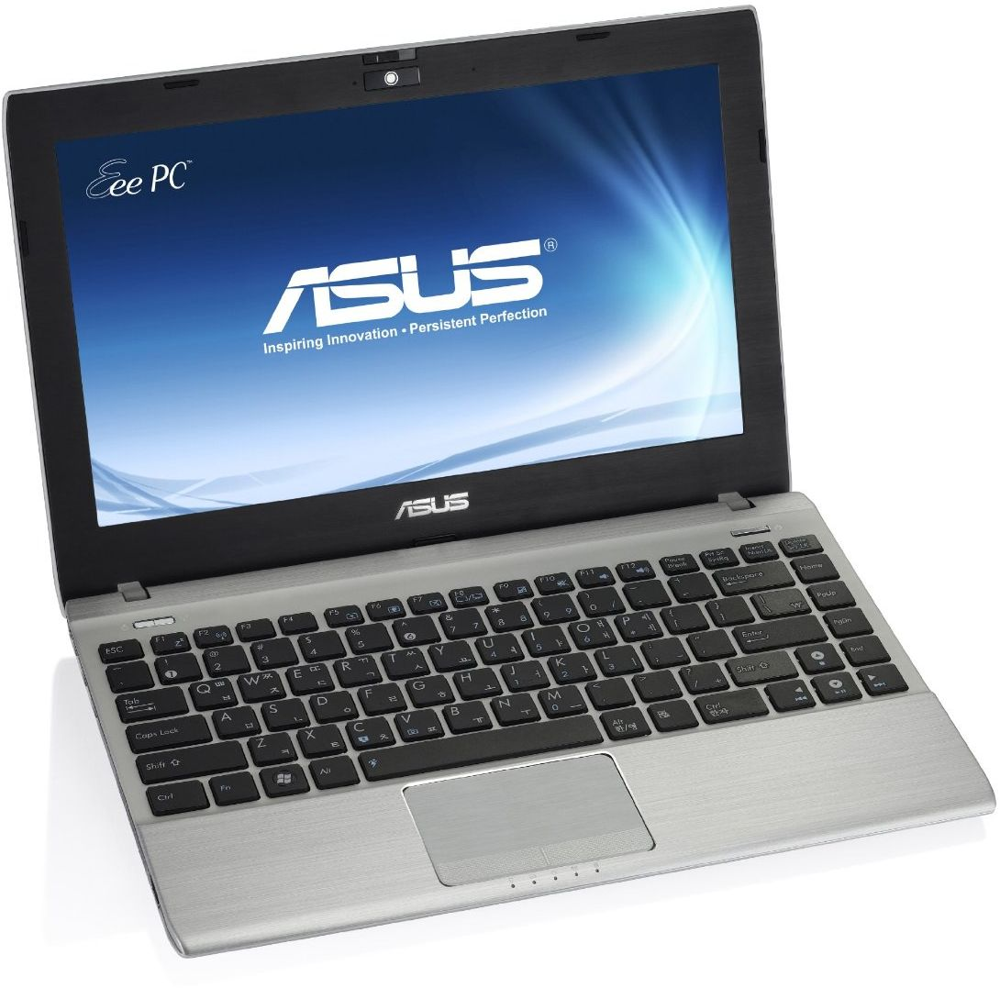
Эра нетбуков 2007-2012 годов, (модель ASUS Eee PC 1225B)
Появились нетбуки: дешевые мини-ноутбуки весом около 1 кг с экранами до 11-12 дюймов. Они работали около 6-8 часов, но были слабыми и подходили только для интернета и легких игр. Ради компактности в них отказались от дисководов в пользу встроеных модулей Wi-Fi и Bluetooth, а также слотов для карт памяти формата SD(Secure Digital - "защищенный цифровой" носитель, компактные флеш-карты, которые часто встречаются в фотоаппаратах).Вместо производительных деталей внутрь ставили экономичные процессоры AMD Fusion (или Intel Atom) с минимальным нагревом.
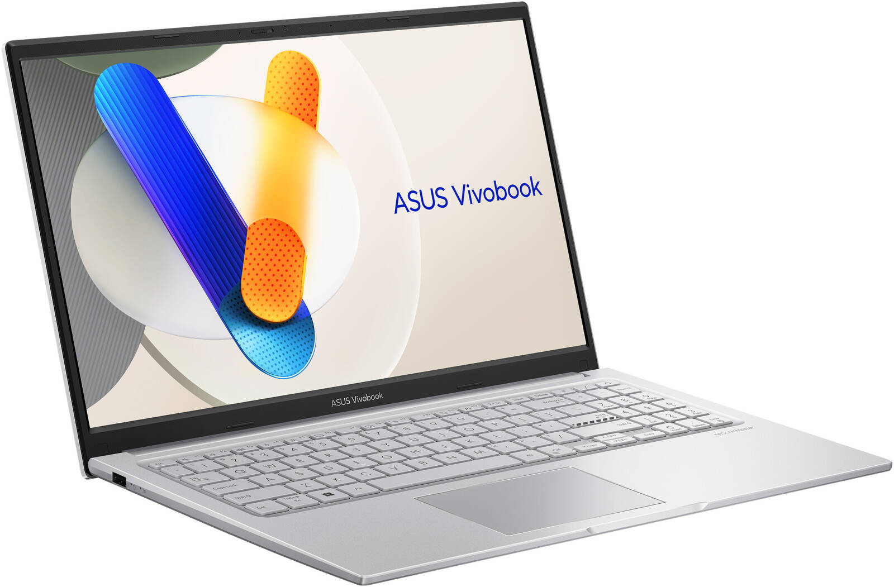
Эра ультрабуков с 2011г.-наши дни, (модель ASUS Vivobook Go14)
Толщина менее 1.5 см, вес около 1 кг, сочные экраны и мощные энергоэфективные процессоры, способные работать без подзарядки весь день.
Эволюция мониторов
От тяжелых кинескопных дисплеев до ультратонких изогнутых экранов: как развивались технологии вывода изображения и менялись типы матриц.
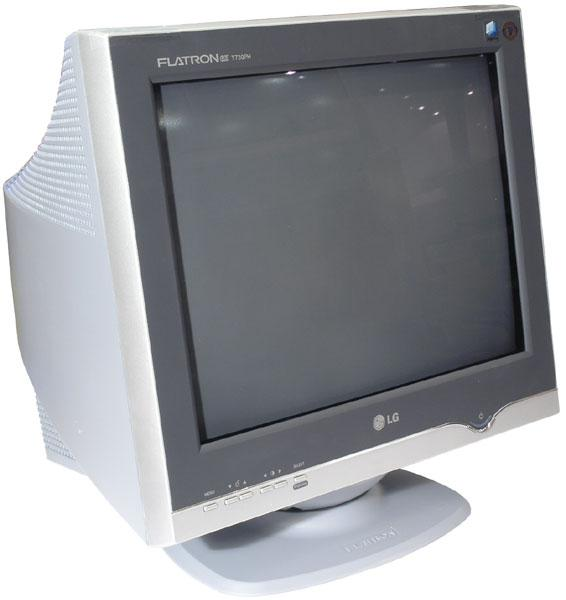
Эра ЭЛТ (электронно-лучевых трубок, 1980-1990-е гг.)
Первые дисплеи работали на базе электронно-лучевой трубки (кинескопа). В них не было привычных матриц: изображение формировалось с помощью электронного луча, попадавшего на люминофорный слой экрана.
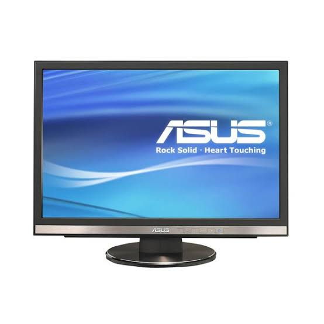
Первые ЖК (жидкокристалические) экраны и матрицы TN(Twisted Nematic, середина 2000-х годов.)
Революция плоских жидкокристаллических дисплеев активно развивалась на базе матриц TN. Популярные модели тех лет от ASUS (напимер широкоформатный MW221U 2007 года) были бытрыми и доступными, но из недостатков технология имела слабые углы обзора.
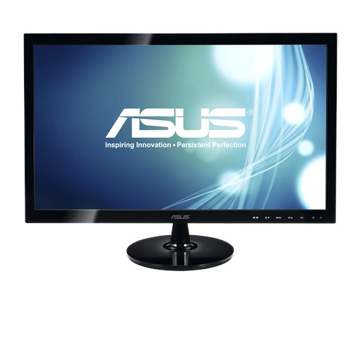
Развитие ЖК: матрицы VA(Vertical Alignment, 2010-е гг.)
Параллельно развивалась технология VA-матриц. Популярные модели от ASUS (включая широкоформатную серию VS248H-P) за счет вертикального выравнивания кристаллов смогли полностью блокироавть свет подсветки. Это обеспечило высокую контрастность и глубокий черный цвет без серого налета в темноте.
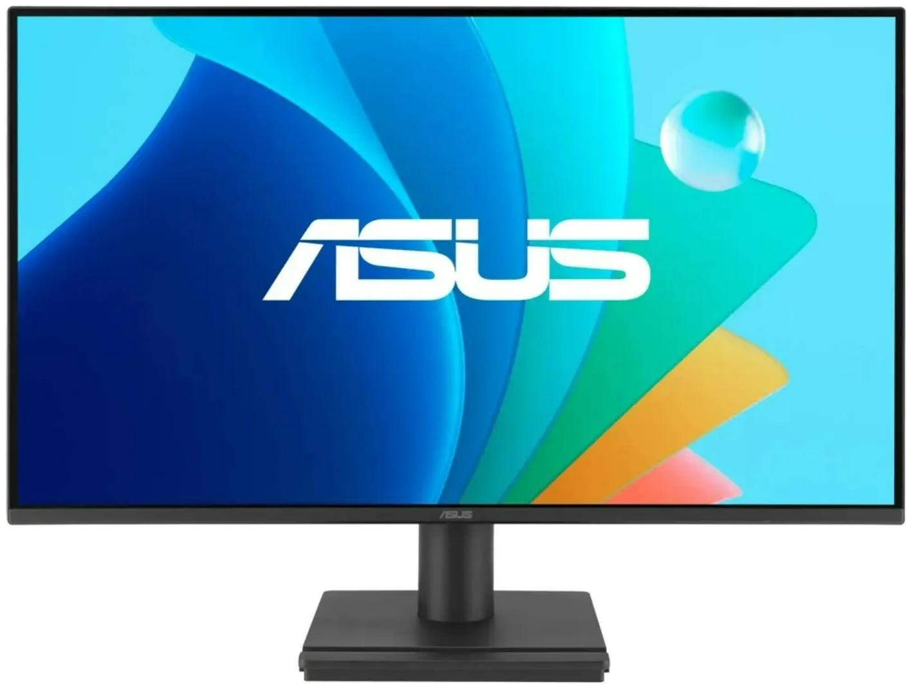
Развитие ЖК: матрицы IPS (In-Plane Switching, например, модель ASUS VA249HG)
Для профессиональной работы с графикой, фото и точной передачи цвета стандартом стали матрицы типа IPS. Популярные модели от ASUS (включая серию VA249HG) за счет особого параллельного выравнивания кристаллов обеспеччили идеальные углы обзора в 178 градусов и максимально естественную цветопередачу без искажений под любым углом.
Устройство системного блока внутри
Внутреннее устройство системного блока:
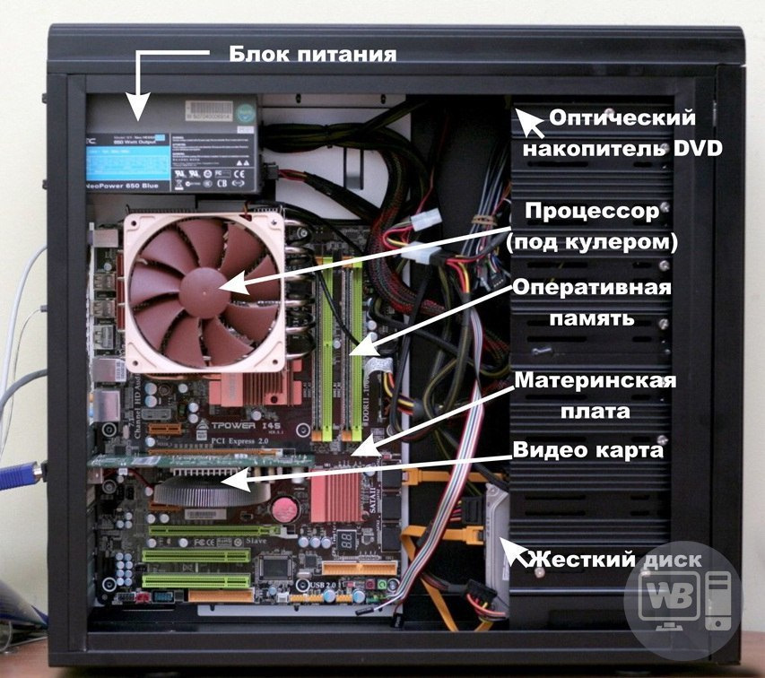
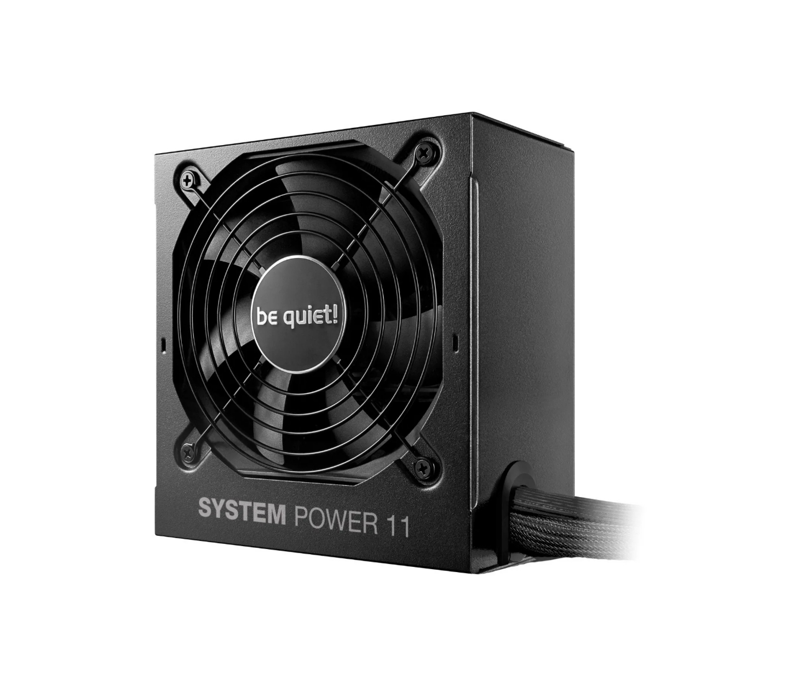
1.Блок питания (PSU)
Преобразовывает переменный ток из розетки в постоянный и распределяет энергию по всем компонентам ПК. От его качества и надежности зависит стабильность всей системы.
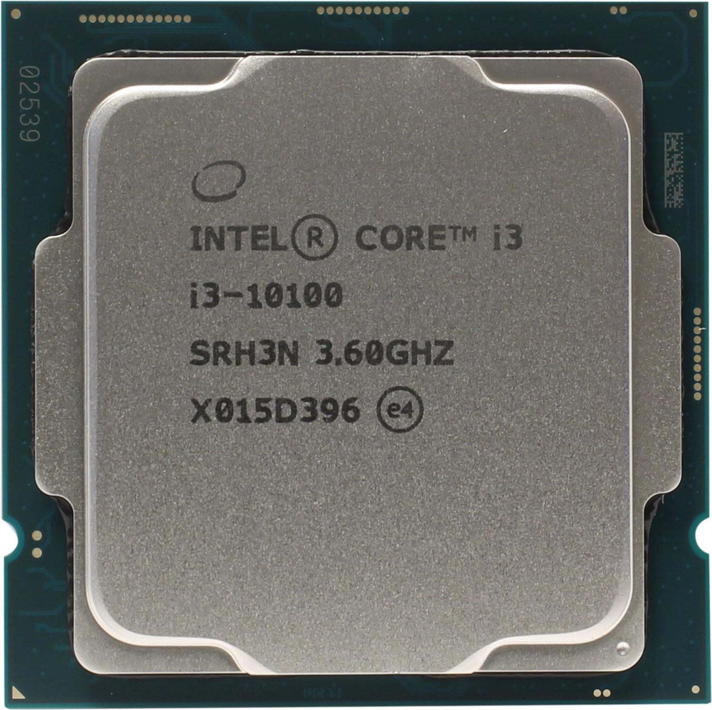
2.Центральный процессор (CPU)
Главный вычислительный чип - "мозг" компьютера. Его производительность зависит от двух главных факторов: количества ядер и тактовой частоты (изменяется в ГГц). Ядра позваляют процессору выполнять несколько задач одновременно, а частота показывает, сколько миллиардов операций в секунду может совершить каждое ядро - чем она выше, тем быстрее работает компьютер.На процессор обязательно должна быть нанесена термопаста и он скрыт под массивным радиатором с вентелятором. Термопаста необходима для заполнения микроскопических неровностей поверхности между процессором и кулером, обеспечивая идеальный отвод тепла и защищая от перегрева. Со временем термопаста высыхает и теряет свои свойства, из-за чего ухудшается теплообмен. Поэтому ее рекомендуется менять раз в 1-3 года для предотвращения перегрева и стабильной работы системы.
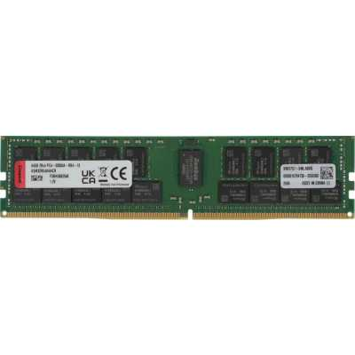
3. Оперативная память (RAM)
Предназначена для временного хранения данных запущенных программ и процессов. Компьютер использует ее для быстрой работы с текущими задачами например: открытыми вкладками браузера или запущенной игрой. При выключении устройства вся информация из этой памяти полностью удаляется.
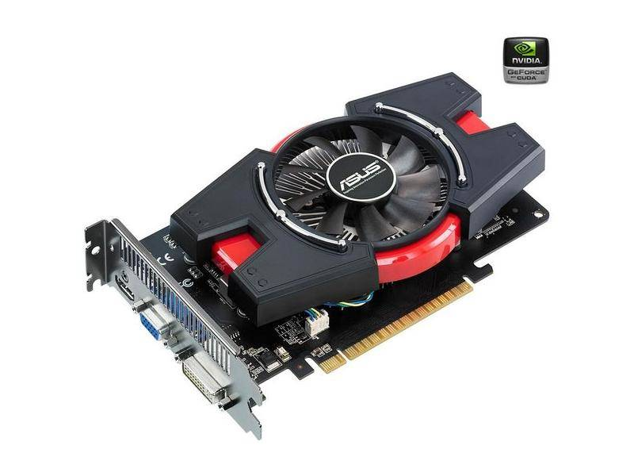
4. Видеокарта (GPU) графический процессор
Отвечает за обработку графической информации и вывод готового изображения на экран монитора.
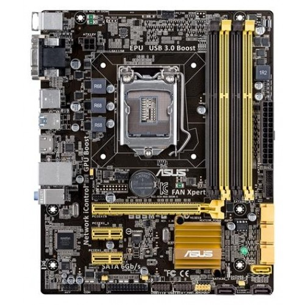
5. Материнская плата
Основная плата системного блока, которая служит фундаментом для всего компьютера. К ней подключаются абсолютно все остальные детали: процессор, видеокарта, оперативная память и накопители. Материнская плата связывает их между собой и помогает им обмениваться с данными, чтобы компьютер работал как один четкий организм.
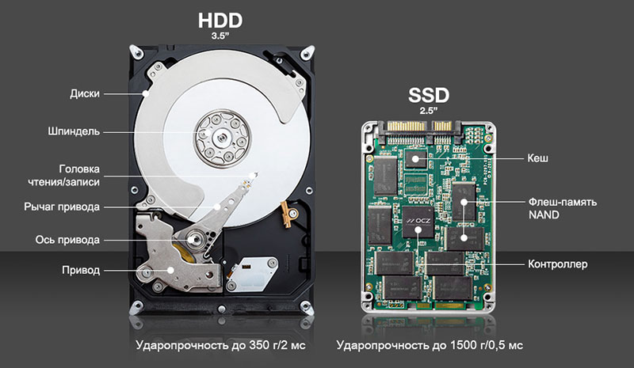
6. Накопители данных (HDD и SSD)
Это постоянная память компьютера. Именно сюда устанавливается операционная система Windows, а также постоянно хранятся файлы, картинки, скачанные игры и фотограффии. История этих устройств началась 13 сентября 1956 года, когда компания IBM выпустила первый в мире жесткий диск (HDD). Старые накопители были размером с два холодильника, весили почти тонну, а вмещали всего 5 мегабайт данных! Сегодня старые жесткие диски (HDD) работают на тех же магнитных принципах, но стали маленькими. Их лучше использовать для простых документов и фотоархивов. А саму Windows и требовательные современные игры настоятельно рекомедуется устанавливать именно на быстрый SSD-накопитель, чтобы операционная система и файлы загружались мгновенно без лагов и зависаний.

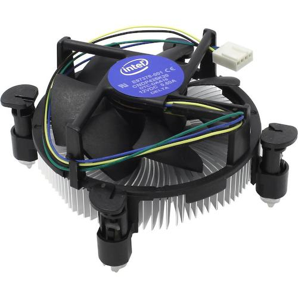
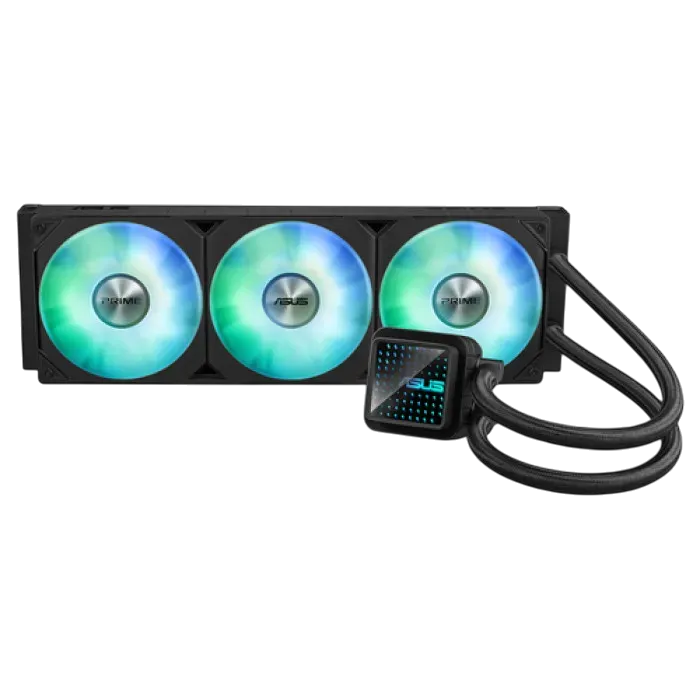
7. Система охлаждения (Кулер)
Отводит тепло от процессора и защищает ПК от перегрева.
- Пассивное охлаждение (с конца 1980-х) - алюминиевый радиатор без вентелятора для слабогреющихся процессоров.
- Воздушное охлаждение ( с середины 1990-х) - радиатор с вентелятором ( с эпохи процессоров Intel Pentium) и медными теплотрубками (2000-е).
- Жидкостное охлаждение- СЖО (система жидкостого охлаждения, с 2010-х) - это замкнутый контур, где помпа переносит нагретую жидкость от процессора к радиатору, а там она охлаждается вентиляторами.